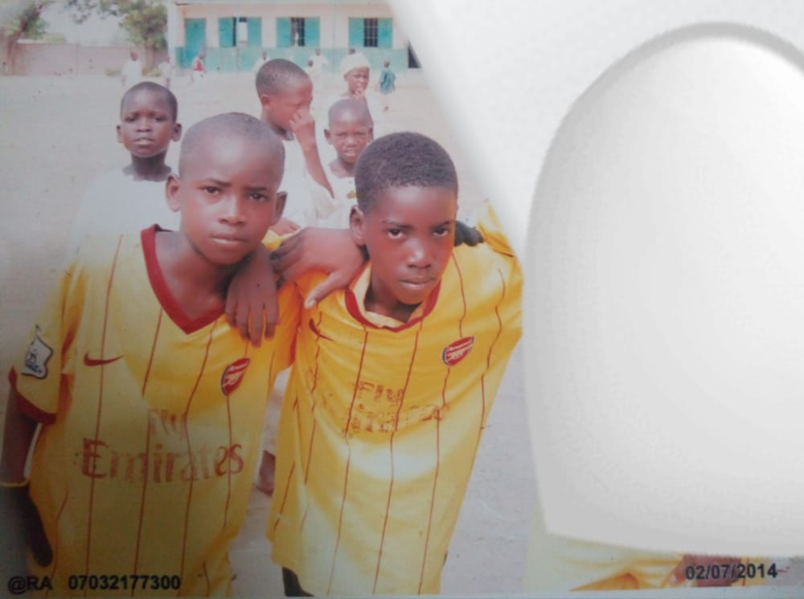

About klawan
My name is KAMAL LAWAN, and you can call me K-LAWAN. I was born on 5 september in madobi, madobi local government area, kano state. i start my nursery at AL-isshad nursery and primary school, lagos state. before our father return us kano to continue school at madobi.
With our classmates of Al-isshad nursery and primary school, lagos state some years ago. each of them i will not identified if i saw him, even their name's i can't remember.
Afte we back i was continue my school at madobi iya special primary school kano state. in 2010 to continue from primary 4. and i was graduated in 2014 from primary school
 Together with Auwal Abubakar 10 year ago at Madobi iya special primary school field during p-graduation competition with teachers, still up to now we're together with him as friend
I start my secondry school at Government Technical College, Ungogo in 2014, i was spent three years at school before graduated from JSCE in 2017. i'm familiar with many friends expecially my roommates and classmates the ones we spent three years together with us.

with my friend of islamiya at Government Technical College, Ungogo in 2017 before us to graduated from JSCE.
I had finished my Senior secondry at Government Technical College, Bagauda. i had spent atleast of three three in school in department of mechanical engineering craft practice NTC 1f - 3f and i was graduated in november 2020. This picture it was a graduation picture together with classmates and also form master MAL. ABBAS DABO SULAIMAN he is our form master since NTC 1 till graduated from the school and he gave us more discipline that is way he is unforgettable for us.
I had studied at School of matriculation studies, Usman danfodio university sokoto now as School of basic and advanced studies-UDUS in 2021 for remidial certificate.

this is only voice of father that have, when he call me.
This is the condolences of my father who was presented at one of the Nigerian radio stations. my ALLAH SWT grant his soul and make him soul in Aljanatul firdausy.
UMAR ALIYU HARUNA currently i didn't have friend like him, fact always i glance him as my brother. because we lengthy of six year we're eating with one bowl, six years in thesame room and three years in thesame class. we're in different local government we can't take alot of time without meet.